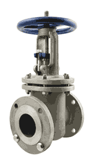
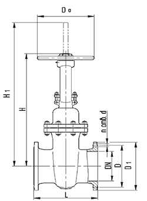

- Продукция
- Запорная арматура
- Задвижка 30с41нж - стальная задвижка
Задвижка 30с41нж
Стальная задвижка 30с41нж (ЗКЛ2-16) предназначена для работы в качестве запорного устройства на трубопроводах в системах водоснабжения и отопления, а также в технологических линиях с газообразными и жидкими средами, нейтральными к материалам деталей задвижки. Направление потока - любое. Установочное положение - любое.
Задвижка 30с41нж может работать при температуре окружающей среды от -40 до +40 градусов Цельсия. Температура рабочей среды - от -40 до +425 градусов.
Задвижка 30с41нж - размеры и цена
Корпус задвижки 30с41нж - литой, изготовлен из стали 25Л. Детали затвора - из стали 20Х13Л. Затвор выполнен в виде двухклинового клина, что исключает заклинивание затвора при колебаниях температуры рабочей среды. Класс герметичности затвора А по ГОСТ 9544-93. Присоединение к трубопроводу - фланцевое.
Размеры и цена задвижек 30с41нж приведены в таблице.
| DN, мм | L | H | H1 | D | D1 | d | n | Масса, кг | 30с41нж цена, руб. без НДС |
|---|---|---|---|---|---|---|---|---|---|
| 30с41нж Ду50 | 180 | 285 | 340 | 125 | 160 | 18 | 4 | 18 | 2225 |
| 30с41нж Ду80 | 210 | 370 | 460 | 160 | 195 | 18 | 4 | 32 | 3382 |
| 30с41нж Ду100 | 230 | 435 | 555 | 180 | 215 | 18 | 8 | 42 | 4484 |
| 30с41нж Ду150 | 280 | 650 | 820 | 240 | 280 | 22 | 8 | 82 | 9232 |
| 30с41нж Ду200 | 330 | 815 | 1040 | 295 | 335 | 22 | 12 | 125 | 12813 |
| 30с41нж Ду250 | 450 | 950 | 1210 | 355 | 405 | 26 | 12 | 260 | 21615 |
| 30с41нж Ду300 | 500 | 1235 | 1470 | 410 | 460 | 26 | 12 | 416 | 29760 |
Чтобы приобрести задвижки 30с41нж звоните нам по телефону (495) 745-60-52.